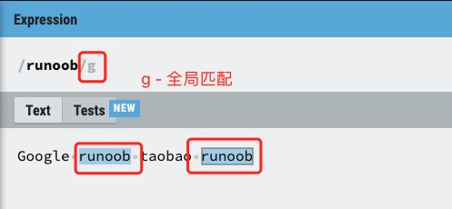
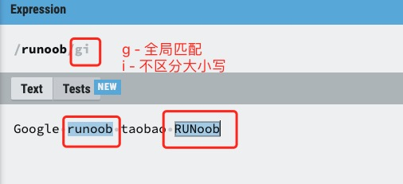
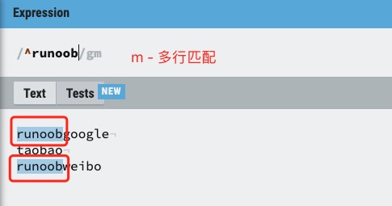
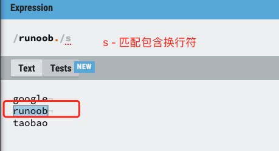

正規表現修飾子（フラグ）
正規表現の修飾子（パターン修飾子またはフラグとも呼ばれます）は、正規表現のマッチング動作を変更するための特別な指示です。
フラグは修飾子とも呼ばれます。正規表現のフラグは、追加のマッチング戦略を指定するために使用されます。
フラグは正規表現の中には記述せず、式の外側に置きます。形式は次のとおりです：
/pattern/flags
よく使う修飾子
次の表に、正規表現でよく使用される修飾子を示します：
1. i(ignore case) - 大文字と小文字を無視
-
マッチングで大文字と小文字を区別しないようにします
-
例：
/abc/i"abc"、"Abc"、"ABC" などにマッチできます -
対応言語：ほぼすべての正規表現実装（JavaScript、PHP、Pythonなど）
2. g(global) - グローバルマッチ
-
最初のマッチで停止するのではなく、すべてのマッチング項目を検索します
-
例：文字列 "ababab" では、
/ab/g3つすべての "ab" にマッチします -
対応言語：JavaScript、PHPなど
3. m(multiline) - 複数行モード
-
変更します
^和$の動作を変更し、文字列全体の先頭と末尾だけでなく、各行の先頭と末尾にもマッチさせます -
例：複数行の文字列では、
/^abc/m各行の先頭にある "abc" にマッチします -
対応言語：JavaScript、PHP、Python、Perlなど
4. s(single line/dotall) - 単一行モード
-
ドットを
.改行文字を含むすべての文字にマッチさせます -
JavaScriptでは "dotall" モードと呼ばれ、
/s修飾子を使用します -
例：
/a.b/s"a\nb" にマッチできます -
対応言語：PHP、Perl、Python（
re.DOTALL)、JavaScript(ES2018+)
5. u(unicode) - Unicodeモード
-
完全なUnicodeサポートを有効にします
-
UTF-16のサロゲートペアとUnicode文字プロパティを正しく処理します
-
例：
/\p{Script=Greek}/uギリシャ文字にマッチできます -
対応言語：JavaScript、PHPなど
6. y(sticky) - 粘着マッチ
-
対象文字列の現在位置からマッチを開始します（
lastIndexプロパティを使用） -
似ています
^アンカーですが、マッチの開始位置を対象とします -
例：JavaScriptでは、
/a/yからlastIndex"a" のマッチを開始します -
対応言語：JavaScript
7. x(extended) - 拡張モード
-
パターン内の空白とコメントを無視して、正規表現をより読みやすくします
-
例：PHPでは、
/a b c/xは次と同等です/abc/ -
対応言語：PHP、Perl、Python（
re.VERBOSE)
g 修飾子
g 修飾子は、文字列内のすべてのマッチング項目を検索できます：

実例
文字列内で "runoob" を検索：
試してみる »
i 修飾子
i 修飾子は大文字と小文字を区別しないマッチングです。実例は次のとおりです：

実例
文字列内で "runoob" を検索：
試してみる »
m 修飾子
m 修飾子を使用すると、^ 和 $テキスト内の各行の開始位置と終了位置にマッチさせることができます。
g は最初の行にのみマッチし、m を追加すると複数行に対応します。

次の実例の文字列では\nを使用して改行しています：
実例
文字列内で "runoob" を検索：
試してみる »
s 修飾子
デフォルトではドット.は改行文字\n以外の任意の文字にマッチします。s を追加すると、.は改行文字を含みます\n。

s 修飾子の実例は次のとおりです：
実例
文字列内で次を検索：
試してみる »
拡張説明
言語固有の修飾子の補足表：
| 言語 | 固有の修飾子 | 説明 |
|---|---|---|
| PHP | A |
パターンを文字列の先頭に固定します |
D |
$文字列の末尾のみにマッチします（末尾の改行は含みません） |
|
U |
量指定子の貪欲性を反転します（すべての量指定子を非貪欲にします） | |
| Python | re.A |
使\w,\W,\b,\BなどはASCII文字のみにマッチします |
re.L |
ローカライズ設定に基づいて\w,\Wなどの意味を決定します |
|
| JS(ES2022) | d |
マッチング結果に indices プロパティを生成します（マッチ位置の開始・終了インデックスを含む） |
修飾子の組み合わせ例の表：
| 組み合わせ | 効果 |
|---|---|
gi |
グローバルマッチ＋大文字小文字を無視（例：すべての形式の "email" という単語を検索） |
ims |
大文字小文字を無視＋複数行モード＋ドットが改行文字にマッチ（ログ分析でよく使用） |
gu |
グローバルマッチ＋Unicodeサポート（例：すべてのUnicode絵文字を検索） |
インライン修飾子の表（PCRE/Perlスタイル）：
| 構文 | 適用範囲 | 例 |
|---|---|---|
(?i) |
大文字と小文字を無視する設定を有効化 | a(?i)bc→ "aBc"、"aBC" にマッチ |
(?-i) |
大文字と小文字を無視する設定を無効化 | a(?i)b(?-i)c→ "aBc" のみにマッチ |
(?i:...) |
括弧内のみに有効 | a(?i:b)c→ "aBc"、"abc" にマッチ |
その他の拡張注意：言語によって修飾子の実装に違いがある場合があります。使用時は各言語のドキュメントを参照することをお勧めします。
クリックしてノートを共有
<p style="font-size:14px;">ノートはこの記事の内容を拡張したものである必要があります！</p><br> <p style="font-size:12px;"><a href="../tougao.html" target="_blank">記事の投稿は、こちらをクリック</a></p> <p style="font-size:14px;"><a href="../w3cnote/runoob-user-test-intro.html" target="_blank">登録招待コードの取得方法</a></p> <h3 class="text-muted"><i class="fa fa-info-circle" aria-hidden="true"></i> ノートを共有する前に<a href=";.html" class="runoob-pop">ログイン</a>が必要です！</h3> <p><a href="../w3cnote/runoob-user-test-intro.html" target="_blank">登録招待コードの取得方法</a></p>